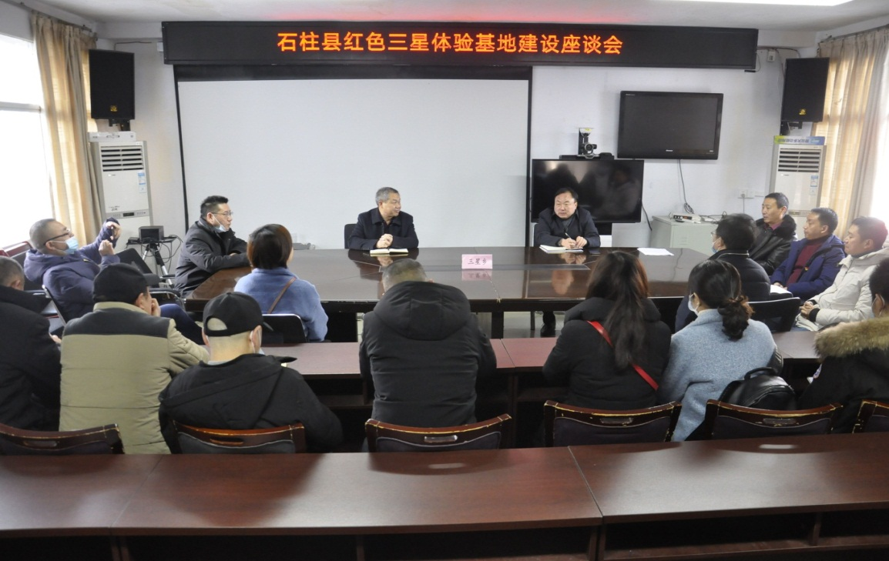

【供稿/远程教育中心】12月22日，重庆电大康养学院党支部书记、院长谢芝玥带队前往石柱县革命老区三星乡，与该乡党委、政府负责人研讨重庆市市民终身学习特色项目——红色三星体验基地建设，合作打造红色文化体验基地。
双方围绕合作开发红色三星体验基地系列课程资源，打造重庆市社区教育特色项目，建设社区教育学校等重点内容，进行了深入交流。下一步，将尽快出台基地建设实施方案，按照时间节点全面推进项目建设，力争在2021年暑假期间建成红色三星体验基地，向市民开放。
康养学院副院长马卫兵、有关部（室）负责人和三星乡党委、政府相关领导参加了座谈会。
